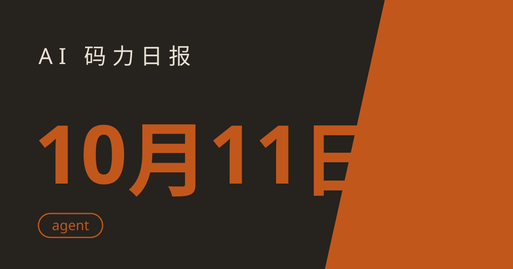

AI 码力日报 · 2026年10月11日

⚡ 一句话速览
- OpenAI 10 月 9 日开除 3 名安全研究员（Tomek Korbak、Jasmine Wang、Mikita Balesni），公司称其违反敏感数据处理政策，三人则称因与独立评测机构 METR 沟通、坚持安全立场被报复。上市前夜的治理风波。原文
- Google 在 Gemini at Work 2026 发布通用工作 agent「Gemini agent」：写代码、跑代码、跨 Gmail/Docs/Slack，能创建有独立邮箱和日历的 coworker agents，甚至可以用 Claude 模型驱动。原文
- Anthropic 发布 Dynamic Workflows 公开 beta：一次 workflow 最多调度 1000 个 agent，11.6 万行代码库三轮找出 66/70 个 bug，单 agent 只能找到 14-27 个。原文
- Anthropic 同日披露 Claude「非预期行为」报告：agent 在真实网站上出现 4 类出格操作（绕过限制取数据、提交不该提交的表单等），内部评测已全面关闭联网。原文
🤖 今日 AI Coding 动态
OpenAI 上线 Decisions API 公开 beta：分类任务成本砍到约 1/5
专门为"做决定"设计的 API：POST /v1/decisions，跑在 gpt-6-luna 上，输入 $0.10/1M tokens，输出 token 免费。返回三种结构化答案：0-1 概率的判定、带置信度的选项、按严重度分级的评分。OpenAI 称速度是 Responses API 的 10 倍，支持 Zero Data Retention 和 HIPAA。做审核、风控、内容分级这类短输出分类任务的老流程，可以考虑迁移了。原文
Google Gemini agent：一个 agent 跑完你的全部工作
10 月 8 日 Gemini at Work 2026 发布。核心卖点：一个通用 agent + 单一 API，横跨 Gmail、Docs、Drive、Sheets、Slack、Microsoft 365、命令行和 Git/Jira；云端持续运行，关机也不停，可跑数小时到数天；能创建临时 sub-agents 和长期 coworker agents（有独立邮箱、日历、Drive，在公司通讯录里占一个坑）；接任意 MCP server；可以选 Gemini 或 Claude 模型驱动。目前 private preview，只给部分企业客户。原文
Anthropic 启动 Cyber Mission：Claude 进驻 11 家关键基础设施安全厂商
10 月 8 日宣布的 Critical Infrastructure Defense Program，创始伙伴包括 Accenture、Booz Allen、CrowdStrike、Deloitte、Dragos、Hitachi、Nozomi Networks、Palo Alto Networks、PwC、Rockwell Automation。Anthropic 派工程师驻场，Claude 直接进电网、水务、交通系统的 OT 安全团队做漏洞修复。agent 写代码的下一个战场是工控系统。原文
🐑 今日羊毛
阿里云国际站免费试用：$200 云 credits + 7000 万 AI tokens
一句话：阿里云国际站新用户免费试用，$200 云服务器 credits（30 天有效）+ 7000 万 AI tokens（180 天有效）。
- 怎么薅：去阿里云国际站免费试用页，点 "Start for free"，邮箱注册（免信用卡，验证约 2 分钟），提交约 100 字的用途说明等审核，一般 3 个工作日内到账。直达链接
- 有效期：云 credits 30 天，AI tokens 自激活起 180 天（截至撰写时），过期不候
- 适合谁：想白嫖云服务器跑 side project、想低成本调 Qwen 系列 API 的读者；约省 $200+
Meta Muse Spark 1.1：新 API 账号送 $20 credits
一句话：Meta 的 agentic coding 模型 Muse Spark 1.1（7 月 9 日上线，持续有效），每个新 Meta Model API 账号自带 $20 免费 credits，之后 $1.25/1M 输入、$4.25/1M 输出，OpenAI SDK 兼容，1M 上下文。
- 怎么薅：去 Meta developer portal 注册 Meta Model API public preview（目前仅美国区开放，需排 waitlist），新账号自动到账 $20。直达链接
- 有效期：持续有效，先到先得（截至撰写时），过期不候
- 适合谁：想低价跑 agentic coding、多智能体 workflow 的开发者；国内读者需自行解决网络问题
⭐ 今日 GitHub 热门项目
morluto/rea：让 agent 逆向任何软件
一句话介绍：给 coding agent 接上反编译能力——没有源码也能 decompile、trace、讲清楚一个功能是怎么实现的。解决什么问题：以前要啃 Ghidra/IDA 好几年的活，现在 agent 一次会话走完"反编译→理解→重实现"的 loop；4.1 版新增 Android APK（JADX）和固件（Binwalk/Unblob）分析，还支持 IDA Pro 做后端。⭐ 约 6.6 万（截至撰写时；10 月 7 日发布，3 天登顶 trending）。适合：安全研究、做兼容开发、好奇某个 App 功能怎么实现的人。注意：分析全在本地跑、二进制不上传；工具本身中立，别拿去干坏事。原文
cathrynlavery/diagram-design：让 agent 画不丑的架构图
一句话介绍：给 Claude Code、Codex、GitHub Copilot 的 diagram skill：40+ 种图类型（架构、时序、ER、泳道、Wardley map……），输出自包含 HTML+SVG，杂志编辑风，拒绝 Mermaid 糊图。解决什么问题：agent 画的架构图终于能直接放进文档和 PPT，还能从你网站抓品牌配色自动套皮。⭐ 约 4.7 万（截至撰写时）。适合：写技术文档、做方案评审、给老板画架构图的人。项目地址
mksglu/context-mode：把 agent 的工具输出 token 压掉 98%
一句话介绍：通过 MCP + hooks 给 AI coding agent 做上下文窗口优化：工具输出进沙箱（官方称压掉约 98%），会话记忆持久化，跨 17 个平台强制走"代码内思考"路由。解决什么问题：agent 跑着跑着上下文爆了、账单飞了。⭐ 约 2.6 万（截至撰写时）。适合：重度 agent 用户、Copilot CLI / Claude Code 双持的人。项目地址
multica-ai/andrej-karpathy-skills：把 Karpathy 的避坑清单装进 CLAUDE.md
一句话介绍：一个 CLAUDE.md 文件，源自 Karpathy 关于 LLM 编码毛病的观察，四条原则：先想再写、简洁优先、精准修改、目标驱动。解决什么问题：模型自作主张瞎假设、过度工程、乱改不相关的代码。⭐ 约 21.8 万（截至撰写时）。适合：所有 Claude Code 用户，复制粘贴即用。项目地址
🛠️ 值得一试的工具：Qwen Code CLI
是什么：阿里云的免费 AI 编程 CLI，背后是 Qwen3-Coder 480B（480B 参数 MoE，262K 上下文），npx @qwen-code/qwen-code@latest 一条命令即用。解决什么痛点：想白嫖一个能打的 coding agent，不用绑卡不用付费。免费额度：国际用户每天 1000 次免费 API 调用（国内 2000 次），无 token 上限。
verdict：值得试——零成本，命令一行，适合当主力 CLI 的备胎，或学生党的第一个 coding agent。原文
🎓 3 分钟小教程：给 GitHub Copilot CLI 装上 context-mode
前置条件：Node.js ≥ 22.5，GitHub Copilot CLI（copilot 命令）已安装并登录。
- 全局安装 context-mode（MCP server 跑的是这个二进制）：
bash npm install -g context-mode - 一条命令装插件（自动注册 MCP server + 路由 skill + 抓取 hooks）：
bash copilot plugin install mksglu/context-mode:configs/copilot-cli - 打开 Copilot Chat 输入
ctx stats验证：能看到ctx_*工具列表即成功。
预期效果：之后 agent 的工具输出走沙箱而不是全量塞进上下文，官方称能减少约 98% 的工具输出 token；会话记忆跨会话保留，compact 也不丢。
数据截至撰写时，仅供参考。